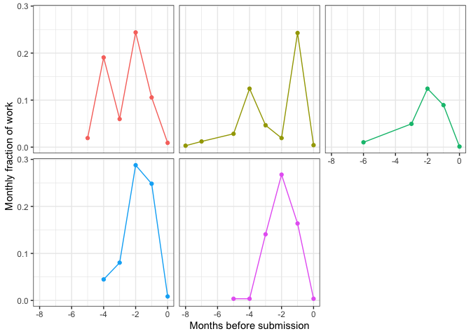

How much time does it take to write a grant?
Writing grants takes time and effort, but how much time? In this post I’ll show data from my time tracking app that quantifies exactly how much time it took me to write applications to a national grant agency (the Australian Research Council).
TLDR: I start preparing 4-5 months ahead of the final deadline, spend about 10% of my work hours over that period. But effort varies and peaks at 30% of my monthly work hours 1-2 months before the deadline.
I hope this post helps other people plan better for grant writing (and here are the strategies I use). I think the significant ongoing time investment also contributes to inequities in scientific careers, I’ll come to that in another post.
Why time matters
Estimating time required on grant writing is an important part of career planning. For instance you may need to think about how you’ll fit it around the rest of your life (grant writing in my experience often requires after hours work) or field work.
Or you may be facing the end of a research contract, and thinking about trying to win the next bucket of funding. So its worth thinking whether the time investment is worth the effort, given the risk of not winning the grant, or whether the time could be better invested in other career opportunities.
When I started grant writing, my best guess for how much time it would take was: “a large proportion of working hours over several months”.
Well, for for quite a few years years I’ve been logging my time on different tasks. My log now includes writing five applications for funding from the Australian Research Council.
For context, ARC grants have an overall success rate of about 20%, and a slightly lower rate for fellowships.
Total time
I estimate that each grant typically requires 4-6 months preparation time at an average of about 10% of total work hours (0.1 FTE) over that period.
But that figure belies considerable variation in effort across time
Below you’ll see cumulative hours on five grants (one for which the outcome is still pending). Each application was written in a different year, but I’ve plotted them concurrently for comparison. My typical grant writing time of 70 hours counts only my time writing, editing or engaged in meetings about the grant. It doesn’t include tea breaks, reading time or thinking time or other people’s time. So actual time investment would be much greater than 70 hours.

The most recent grant took significantly less time than the others. This grant was a collaborative effort. It also came easily in that I had material and experience to draw on from previous years.
You’ll see I started thinking and working on each grant about 4 months ahead of time.
That is in part due to a very good internal preparation process my research institute (Australian Rivers Institute at Griffith University) runs. Over several workshops we pitch our initial ideas and then get directed feedback on drafts of the applications.
Effort kicks up at about 2.5 months out, when I usually aim to have a first draft written so it can be reviewed by colleagues.
Then effort peaks just before the lead up to the 1 month mark. Most major grants require internal review by the University’s research office, and the deadline for that is 1 month before the final.
Then in the final month effort drops off again. Usually by that point I’m just tying up lose ends and making minor corrections from the review feedback.
I have replotted that data as fraction of my monthly work hours (not accounting for holidays).

You clearly see the peak between 3 and 2 months out.
To sum up, it takes time and planning to write a major grant. In follow up posts I’ll discuss the strategies I use.
I also want to acknowledge that I have had the privileges and opportunities that help me spend time on grant writing. But not everyone has that opportunity or privilege. In a final post I’ll discuss how complex grant applications can be inequitable.